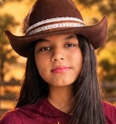
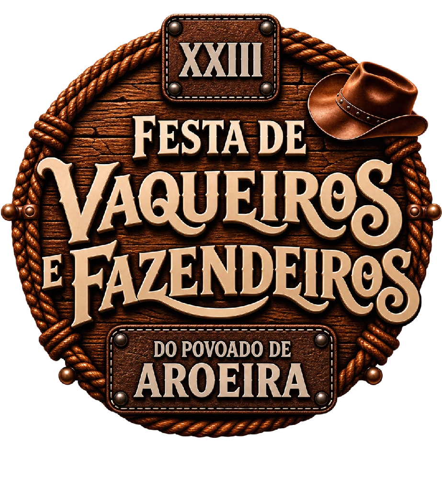
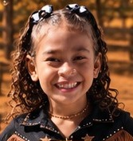
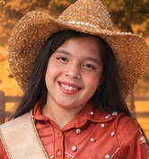
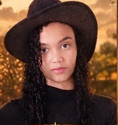
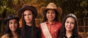
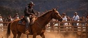
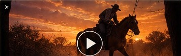
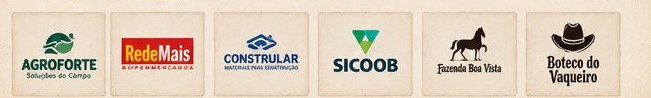
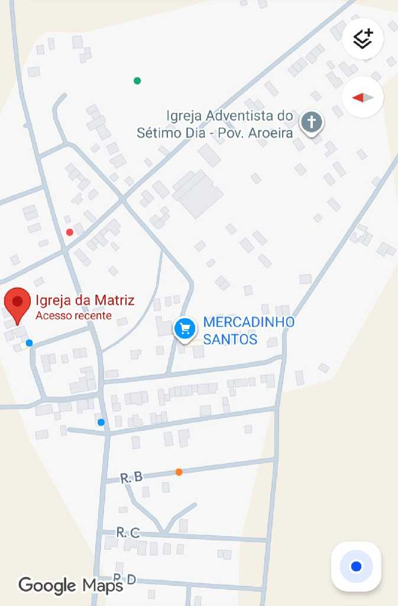

♛ RAINHA

FESTA DE



Notícia oficial em preparação. O conteúdo será publicado após confirmação da organização.
EM ATUALIZAÇÃO →
REPRESENTANTESVeja os nomes e as funções informadas para a XXIII edição da festa.
VER CANDIDATAS →
INFORMAÇÃO EM ATUALIZAÇÃOOs horários e atrações serão publicados após confirmação da organização.
VER PROGRAMAÇÃO →
03:45A FORÇA DA NOSSA TRADIÇÃO
A Festa de Vaqueiros e Fazendeiros do Povoado de Aroeira chega à sua XXIII edição mantendo viva uma tradição construída através de gerações.
É encontro, memória, cultura e orgulho da nossa terra. Uma celebração feita por quem vive o sertão.
Valores e ranking são ilustrativos até a integração oficial.
POVOADO DE AROEIRA
PÉ DE SERRA — BA
CEP 44655-000 · Plus Code 2CRP+58
